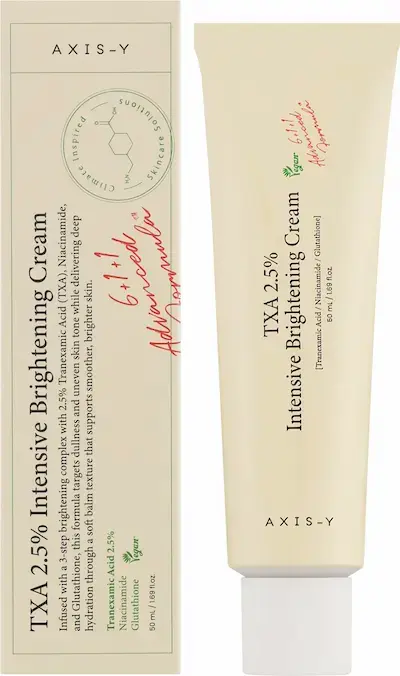
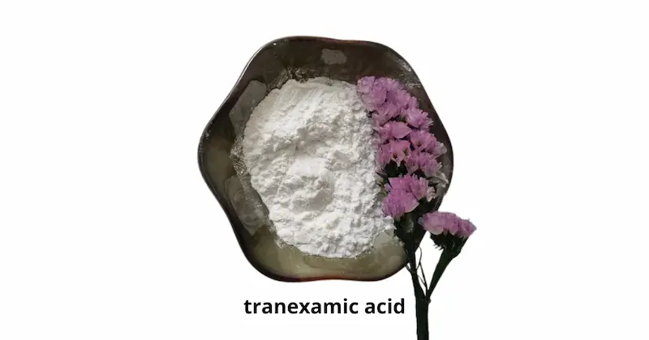

AXIS-Y TXA 2.5% Intensive: обзор осветляющего крема для лица
Независимый редакционный обзор. Продукт предоставлен
BeautyPanda
Данный материал подготовлен в информационных и редакционных целях.
Предоставление продукта для обзора не означает, что содержание
статьи было согласовано с брендом или продавцом.
Представленная информация основана на анализе состава, заявленных
характеристик продукта и доступных данных о его ингредиентах. Она
не является официальной рекомендацией производителя и не заменяет
консультацию специалиста.
Все названия брендов, товарные знаки и наименования продукции
принадлежат их законным правообладателям и используются
исключительно в информационных и редакционных целях.
Средство предоставлено BeautyPanda для независимого редакционного обзора.
Разбираем состав AXIS-Y TXA 2.5% Intensive: особенности формулы с транексамовой кислотой (TXA), дополнительные активные компоненты и возможное применение в уходе за кожей с неровным тоном и следами постакне.

AXIS-Y TXA 2.5% Intensive — осветляющий крем для лица
Крем для ухода за кожей с неровным тоном и следами постакне. Разбираем формулу AXIS-Y TXA 2.5% Intensive, роль транексамовой кислоты (TXA) и дополнительных компонентов, которые могут поддерживать увлажнение и комфорт кожи. Отдельно рассматриваем, кому может подойти средство, как постепенно включить его в уход и на что обратить внимание при чувствительной коже.
Почему этот крем заслуживает внимания?
AXIS-Y TXA 2.5% Intensive — осветляющий крем для лица, предназначенный для ухода за кожей с неровным тоном и следами постакне. При выборе такого средства важно учитывать не только заявленные активные компоненты, но и особенности всей формулы.
Транексамовая кислота (TXA) используется в косметике для ухода за кожей с неоднородным тоном и видимыми пигментными пятнами. Её действие связано с процессами, участвующими в образовании пигмента, однако результат зависит от формулы средства, регулярности применения и индивидуальных особенностей кожи.
В этом обзоре мы разберём заявленную концентрацию TXA 2,5%, другие ингредиенты крема, особенности его текстуры и способы включения в ежедневный уход. Также рассмотрим, кому средство может подойти и на что обратить внимание при чувствительной коже.
Текстура и первое использование
AXIS-Y TXA 2.5% Intensive отличается плотной, насыщенной текстурой, которую в отзывах описывают по-разному: одни пользователи отмечают, что крем приятно распределяется по коже, хорошо увлажняет и оставляет ощущение мягкости, другие считают его довольно жирным и отмечают, что ему требуется время для впитывания.
По ощущениям это скорее питательный крем с бальзамообразной консистенцией, а не лёгкий флюид. При нанесении тонким слоем он может оставлять комфортное ощущение увлажнённой кожи. Если использовать слишком много средства, финиш может казаться тяжёлым, липким или излишне блестящим. Поэтому для первого применения лучше начать с небольшого количества и при необходимости скорректировать его.
Судя по отзывам, крем может особенно понравиться обладателям сухой и нормальной кожи, которым не хватает питания и увлажнения. При комбинированной коже многое зависит от сезона и индивидуальных предпочтений, а для жирной кожи плотный финиш может оказаться некомфортным. Если планируешь наносить средство утром под макияж, сначала проверь, как оно впитывается именно на твоей коже и сочетается с другими продуктами.
При первом использовании наноси крем постепенно, следуя инструкции производителя. В дневное время дополняй уход солнцезащитным средством широкого спектра действия с SPF 30 или выше. Если появляются выраженное раздражение, жжение или стойкое покраснение, прекрати использование.


Разбор состава: что внутри?
AXIS-Y TXA 2.5% Intensive Brightening Cream сочетает компоненты, направленные на улучшение внешнего вида неровного тона, увлажнение и поддержку защитного барьера кожи. Среди ключевых ингредиентов — транексамовая кислота, ниацинамид, глутатион, увлажняющие компоненты, церамид и растительные экстракты. Отдельного внимания заслуживает масло ши: оно помогает смягчать кожу и придаёт формуле более насыщенный характер.
Транексамовая кислота (Tranexamic Acid) — 2,5%
Один из главных активных компонентов крема. Транексамовую кислоту используют в косметическом уходе для работы с неровным тоном и видимыми пигментными пятнами. Она может способствовать уменьшению выраженности поствоспалительной гиперпигментации — тёмных следов, которые иногда остаются после акне. Результат зависит от причины пигментации, регулярности ухода и индивидуальных особенностей кожи.
Ниацинамид (Niacinamide) — 2,5%
Ниацинамид — форма витамина B3, которая дополняет действие транексамовой кислоты. Он помогает улучшать внешний вид неоднородного тона, поддерживает защитный барьер кожи и способствует сохранению влаги. Сочетание этих двух компонентов делает формулу интересной для ухода за кожей с тусклостью и следами постакне, хотя выраженность эффекта будет индивидуальной.
Глутатион (Glutathione)
Глутатион — антиоксидант, который дополняет комплекс ингредиентов, предназначенных для ухода за кожей с неровным тоном. Его присутствие само по себе не гарантирует осветления пятен: значение имеют концентрация компонента, вся формула и регулярность применения. Точная концентрация глутатиона в списке INCI не указана.
Масло ши (Butyrospermum Parkii Butter)
Масло ши — важный смягчающий компонент этой формулы. Оно помогает уменьшать ощущение сухости и стянутости, смягчает кожу и способствует поддержанию её увлажнённости. Масло ши также придаёт крему более питательный характер, что может быть плюсом для нормальной и сухой кожи. При этом обладателям жирной кожи, которым не нравятся насыщенные текстуры, стоит начать с небольшого количества и оценить финиш.
Увлажняющие компоненты
Глицерин (Glycerin) помогает притягивать и удерживать воду в верхних слоях кожи. В формуле также используются несколько форм гиалуроновой кислоты: Sodium Hyaluronate, Hydrolyzed Hyaluronic Acid и Sodium Acetylated Hyaluronate. Они помогают поддерживать увлажнённость и делают кожу визуально более гладкой.
Смягчающие ингредиенты, включая Dicaprylyl Ether, Hydrogenated Polydecene и Octyldodecanol, помогают уменьшать потерю влаги и улучшают тактильные свойства крема. В сочетании с маслом ши они могут объяснять насыщенное ощущение средства на коже.
Поддержка защитного барьера
Ceramide NP — церамид, который помогает поддерживать защитный барьер кожи и препятствовать избыточной потере влаги. Пантенол (Panthenol) способствует увлажнению и помогает поддерживать комфорт кожи. Эти компоненты полезны в уходе, особенно если кожа склонна к сухости или стянутости.
Растительные экстракты и антиоксиданты
Centella Asiatica Extract — экстракт центеллы азиатской, который используют в косметике для ухода за кожей, склонной к раздражению. Houttuynia Cordata Extract дополняет растительную часть формулы. Tocopherol (витамин E) обладает антиоксидантными свойствами и также применяется в средствах для ухода за кожей.
Что формирует текстуру крема?
В составе присутствуют жирные спирты, в том числе Stearyl Alcohol, Behenyl Alcohol и Arachidyl Alcohol. Их не следует путать с этиловым спиртом: в косметике они выполняют преимущественно смягчающую и структурообразующую функции. Эмульгаторы Cetearyl Olivate и Sorbitan Olivate помогают объединять водную и масляную фазы и поддерживать стабильность кремовой текстуры.


Кому может подойти такая формула?
Благодаря сочетанию осветляющих активов, увлажнителей и смягчающих компонентов крем может заинтересовать тех, кто хочет ухаживать за кожей с неровным тоном и следами постакне, не забывая об увлажнении. Более насыщенная формула может быть комфортна для нормальной и сухой кожи. Жирной и комбинированной коже стоит учитывать собственные предпочтения по текстуре и наносить средство тонким слоем.
Даже при наличии компонентов, поддерживающих кожный барьер, индивидуальная реакция возможна на любой косметический продукт. Если кожа чувствительная, вводите крем постепенно и сначала протестируйте его на небольшом участке. Днём рекомендуется использовать солнцезащитное средство широкого спектра действия с SPF 30 или выше: это особенно важно при уходе за пигментацией и следами постакне.
Итог: формула AXIS-Y TXA 2.5% Intensive Brightening Cream сочетает транексамовую кислоту и ниацинамид с увлажняющими, смягчающими и барьерными компонентами. Масло ши, гиалуроновая кислота, пантенол и церамид дополняют активную часть формулы, помогая поддерживать увлажнённость и комфорт кожи. Крем можно рассматривать как один из вариантов ухода за неоднородным тоном и следами постакне, однако он не гарантирует полного исчезновения пигментных пятен.
Как правильно использовать крем?
AXIS-Y TXA 2.5% Intensive Brightening Cream можно включить в уход за кожей с неровным тоном, пигментными пятнами и следами постакне. Наносите небольшое количество крема на чистую кожу после очищения и, если используете сыворотку, после неё. Распределяйте средство равномерно, избегая области вокруг глаз, если производитель не указывает иное.
Если вы впервые используете крем с транексамовой кислотой или у вас чувствительная кожа, начните с применения несколько раз в неделю и следите за реакцией кожи. При хорошей переносимости частоту можно постепенно увеличить в соответствии с инструкцией производителя. Не стоит наносить слишком много средства: с учётом смягчающих компонентов, включая масло ши, тонкого слоя может быть достаточно для комфортного ухода.
Крем можно использовать утром или вечером, если это соответствует инструкции на упаковке. В утреннем уходе завершающим этапом наносите солнцезащитное средство широкого спектра действия с SPF 30 или выше. Защита от солнца особенно важна, если вы работаете с пигментацией и следами постакне: без неё пятна могут сохраняться дольше или становиться заметнее.
Если в вашем уходе уже есть ретиноиды, отшелушивающие кислоты или другие активные средства, вводите продукты постепенно и обращайте внимание на суммарную нагрузку на кожу. При появлении стойкого жжения, выраженного покраснения, зуда или шелушения прекратите использование до восстановления кожи. При необходимости обратитесь к дерматологу.


Где найти AXIS-Y TXA 2.5% Intensive?
AXIS-Y TXA 2.5% Intensive представлена у BeautyPanda. Уточнить актуальное наличие и стоимость можно непосредственно у продавца.
Магазины Beauty Panda в Молдове:
📍 Сорока
str. Grigore Vieru 9B, Soroca, Moldova, MD-3001
📍 Дрокия
str. 31 August 20/C, Drochia, Moldova
*Наличие, стоимость и условия покупки рекомендуется уточнять у продавца перед визитом. Ссылка ведёт на страницу продавца в Instagram.
Часто задаваемые вопросы
Можно ли использовать AXIS-Y TXA 2.5% каждый день?
Частота применения зависит от инструкции производителя и индивидуальной переносимости кожи. Если вы только начинаете использовать крем, вводите его постепенно и следите за реакцией. При хорошей переносимости можно перейти к регулярному применению согласно рекомендациям на упаковке. При выраженном раздражении уменьшите частоту или временно прекратите использование.
Подходит ли крем для кожи, склонной к акне?
Крем может быть полезен в уходе за кожей, на которой остаются следы после высыпаний, благодаря компонентам, направленным на выравнивание тона. Однако это не специализированное лекарственное средство для лечения акне. Если у вас активные воспаления, подбирайте уход с учётом состояния кожи и её переносимости.
Помогает ли AXIS-Y TXA 2.5% от постакне и пигментных пятен?
Транексамовая кислота и ниацинамид используются в косметическом уходе для улучшения внешнего вида неровного тона и тёмных следов после воспалений. При регулярном применении крем может помочь сделать такие пятна менее заметными, но результат зависит от их происхождения, особенностей кожи и продолжительности ухода. Днём важно использовать солнцезащитное средство широкого спектра действия с SPF 30 или выше.
Можно ли сочетать крем с ретинолом и кислотами?
Совместимость зависит от конкретных средств и чувствительности кожи. Одновременное применение нескольких активных продуктов может повысить риск сухости и раздражения. Если кожа чувствительная или вы только начинаете использовать активный уход, вводите средства по одному и при необходимости чередуйте их по дням.
Подойдёт ли крем жирной коже?
Это зависит от индивидуальных предпочтений и реакции кожи. В формуле есть смягчающие компоненты, в том числе масло ши, поэтому текстура может показаться некоторым обладателям жирной кожи насыщенной. Начните с небольшого количества и оцените, насколько комфортно средство ощущается на коже и сочетается с остальным уходом.
Что делать, если после нанесения появляется жжение или покраснение?
При выраженном или продолжительном жжении, сильном покраснении, зуде либо отёке прекратите использование средства. Если появилась заметная реакция, смойте крем и не наносите другие активные продукты до восстановления кожи. При сильных или сохраняющихся симптомах обратитесь к врачу.